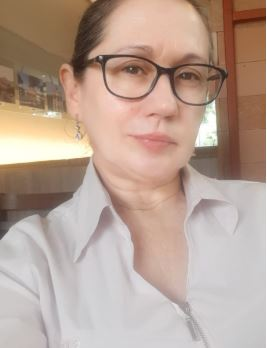

Alguns marcos pretéritos da minha trajetória de vida, que fazem parte dos pilares de sustentação que me guiaram até o presente.
Biografia acadêmica · 2016–2025
Profa. Dra.
Profa. Dra.
Nara Bigolin
Coordenadora do Movimento Meninas Olímpicas, professora titular em Computação na UFSM, pesquisadora e doutora em Inteligência Artificial.

Nara Martini Bigolin
UFSM · Movimento Meninas Olímpicas
01
Breve descrição
Cientista da Computação, PhD em IA, Filósofa, Palestrante, Membro da Ordem Nacional do Mérito Educativo e Professora Titular em Computação na Universidade Federal de Santa Maria - UFSM. Mãe de 3 filhas (1991-in memoriam, 2001,2004) e 1 filho (2006). Doutorado em Inteligência Artificial (1995-1999, Sorbonne Université - Pierre et Marie Curie) , Mestrado em Ciência da Computação (1992-1994, UFRGS) possui Graduação em Informática (1988-1992, PUC/RS) e Graduação em Filosofia (2020-2022, Universidade Paulista), e atualmente é Graduanda em Jornalismo (2024-UFSM).
Atua como Docente e Pesquisadora (1993-atual) há mais de 3 décadas em várias Universidades da França e do Brasil com mais de 100 publicações, além de orientações em trabalhos de graduação e pós-graduação e em funções administrativas como coordenação de curso e presidências em diversas comissões. Desde 1989, atua em dezenas de projetos de pesquisa, ensino e extensão na área do Computação na Educação Básica, Inteligência Artificial e na temática sobre a desigualdade de gênero nas Olimpíadas Científicas nas Áreas de Exatas e nos espaços de poder. Desde 2016, têm realizado inúmeras palestras nos temas sobre a implantação e ensino da Computação na Educação Básica e a desigualdade de gênero em olimpíadas científicas e em espaços de poder.
É fundadora e coordenadora do Movimento Meninas Olímpicas do Brasil, fundadora e coordenadora geral do Torneio Feminino de Computação (desde 2020), fundadora e coordenadora adjunta do Torneio de Física para Meninas (desde 2023), compõe a comissão da Olímpiada Feminina de Matemática do Estado da Bahia - OFMEBA (desde 2021) e comissão da Olímpiada Nacional de Filosofia (desde 2024). Junto a Sociedade Brasileira de Computação (SBC) foi membro da Comissão da Educação Básica da SBC (2016-2023) que elaborou as Normas sobre Computação na Educação Básica hoje em implantação . Foi Conselheira suplente da SBC (2019-2021).
02
Premiações e homenagens
Devido ao seu protagonismo na implantação da Computação na Educação Básica do Brasil e na criação do movimento nacional visando a participação igualitária das mulheres em espaço de poder através da igualdade das meninas em olimpíadas na área de Exatas (2015-atual) foi condecorada com vários prêmios:
Em 2018 foi condecorada com a 🏆 1- Medalha da Ordem Nacional do Mérito Educativo indicada pelo Ministro da Educação recebendo a Medalha da Ordem. Foi eleita a 🏆 2- Mulher Cidadã 2018 do RS na Modalidade Educação pela Assembleia Legislativa do RS e recebeu 🏆3- Homenagem na Olimpíada Internacional de Matemática, principal olimpíada do mundo, a IMO 2018, ocorrida na Romênia, pela sua contribuição no incentivo às meninas nas olimpíadas científicas. Em 2018, recebeu também 🏆4- Homenagem da Procuradoria Especial da Mulher da Assembleia Legislativa do RS, pelo protagonismo na Educação Básica e pelo incentivo às meninas na área de Exatas, assim como foi finalista dois anos consecutivos do 🏆5- Prêmio Educação do SINPRORS.
Em 2019 foi indica a 🏆Medalha Mietta Santiago da Câmara dos Deputados, a qual visa valorizar iniciativas relacionadas aos direitos das mulheres.
Em 2021 foi 🏆líder da equipe brasileira que representou o Brasil na EGOI 2021 - Olimpíada Europeia de Informática para Garotas, a qual conquistou ouro.
Em 2024 foi agraciada com o três Prêmios:🏆 1- Prêmio Mulheres na Ciência Amélia Império Hamburger, concedido pela Câmara dos Deputados que é o reconhecimento da excelência da participação feminina na solução dos grandes desafios da humanidade e um estímulo à capacitação de mais mulheres cientistas; 🏆2- Prêmio Mulher Transformadora, concedido pela Prefeitura de Frederico Westphalen e 🏆3- Prêmio Ana Primavesi concedido Grupo Diário de Santa Maria que é um reconhecimento à mulheres cientistas que mudam a vida da sociedade.
Em 2025 foi agraciada com o 🏆 Troféu Educar para Inovar referente a proposição do Prêmio Jovem Talento Científico Gaúcho e a parceria com a Secretaria de Inovação, Ciência e Tecnologia.
03
Frases elaboradas
Ao longo de minha trajetória pessoal e profissional, algumas expressões se tornam minhas verdades.
A presença feminina é inversamente proporcional ao prestígio das olimpíadas ou dos espaços de poder e decisão. Pois foi constatado através de uma pesquisa que o percentual de meninas premiadas em olimpíadas científicas equivale às mulheres em espaço de poder, ou seja, se não houver meninas nas olimpíadas hoje não haverá mulheres nos espaços do poder amanhã, pois as meninas não tem acesso ao desenvolvimento da habilidade necessária para ocupar os espaços de poder e de decisão.
Uma ação compensatória/afirmativa nunca é nula, deveria ser construtiva mas conduzida erroneamente será destrutiva. Muitas atividades para resolver a desigualdade de gênero podem ter efeitos negativos se as ações forem bem conduzidas de maneira equivocada.
Não se nasce gênio, se torna um com muita dedicação, apoio familiar e resiliência, pois atrás de um talento acadêmico existe uma família comprometida com a Educação. Através do convívio com os pais dos maiores talentos do Brasil, percebemos que as famílias tinham um padrão.
Nossa importância é proporcional ao conhecimento ou cuidado que compartilhamos.
04
Biografia resumida
Nara Bigolin é bastante conhecida no meio acadêmico e científico brasileiro, especialmente por seu trabalho pioneiro em Inteligência Artificial, Computação e luta pela igualdade de gênero nas ciências exatas, sendo professora da UFSM, doutora em IA pela Sorbonne e coordenadora do projeto Meninas Olímpicas. Ela é reconhecida por sua trajetória inspiradora, que inclui superar a dislexia, e por prêmios como o Mulheres na Ciência Amélia Império Hamburger em 2024.
Quem é Nara Bigolin?
Profissão: Filósofa, pesquisadora, professora universitária (UFSM) e especialista em Inteligência Artificial.
Formação: Doutorado em Inteligência Artificial pela Sorbonne (França), Mestrado em Ciência da Computação e graduação em Filosofia, além de áreas técnicas.
Foco de Atuação: Inclusão de meninas e mulheres em olimpíadas de conhecimento e na computação, combatendo a desigualdade de gênero nas áreas STEM (Ciência, Tecnologia, Engenharia e Matemática).
Projetos: Coordena o Movimento Meninas Olímpicas, Torneio Feminino de Computação e Torneio de Física para Meninas.
Reconhecimento: Recebeu o Prêmio Mulheres na Ciência Amélia Império Hamburger (2024), o 1º Prêmio Ana Primavesi (2024) e a Medalha da Ordem Nacional do Mérito Educativo (2018), entre outros.
Por que ela é conhecida?
Ela se destaca por sua jornada pessoal, por sua dedicação à educação e por ser uma voz ativa na promoção da participação feminina na tecnologia e ciência, inspirando novas gerações.
05
Descrição estendida
🔷Juventude: Sou natural da cidade de Três de Maio (RS), nascida em 26/07/1969. Realizei toda a minha formação da Educação Básica neste município. O Ensino Médio realizei no período de 1984-1986 iniciando a formação de Técnico em Enfermagem, num Colégio Interno de Freiras, e concluindo o Ensino Médio na rede estadual, com duas formações técnicas: Técnica em Administração e Técnica em Análises Química. Durante o Ensino Médio tive minhas primeiras experiências de pesquisa, onde participei de várias feiras de ciências chegando a 3º lugar nacional.
🔷Formação Superior - A graduação de Bacharelado em Informática foi realizada na PUCRS no período de 1998-1991, onde fui bolsista de Iniciação Científica durante toda a graduação. O Mestrado foi em Ciência da Computação na UFRGS no período de 1992-1994 e o Doutorado em Inteligência Artificial na Universidade Pierre et Marie Curie – Sorbonne Université, na França, no período de 1995-1999.
🔷Experiência tecnológica - No decorrer dos anos presenciei a evolução do mundo da Tecnologia e da Computação. Nasci sem energia elétrica, conheci computador e ar-condicionado aos 17 anos, acessei a internet pela primeira vez aos 22 anos durante o mestrado e uma porta se abriu automática com um cartão aos 25 anos, durante o doutorado. Todas as tecnologias ultrapassadas atualmente. Presenciei a instalação de energia elétrica, televisão à bateria, o uso de máquina de escrever e de fotocópia que borrava todo o documento, transparência datilografadas, retroprojetores, os primeiros computadores do tipo PCs 286 (Personal Computers), impressora matricial, disquetes 5 1/4, internet discada, enfim, essas raridades que a maioria dos acadêmicos desconhece. Atualmente, estamos lidando com internet banda larga, notebook, smartfones, lousa interativa digital, Moodle, Google Meet, documentos digitais, aulas virtuais e Inteligência Artificial Generativa. Enfim, tive o privilégio de viver 300 anos em 30.
🔷Pessoal - Meus filhos nasceram de 2001 a 2006. Mariana nasceu em 2001, Natalia nasceu em 2004 e Lucas nasceu m 2006. No período de 2001 a 2016, meu tempo foi destinado quase que integralmente à maternidade, visto que eu era a principal responsável pelas atividades vinculadas aos filhos e às atividades familiares.
🔷Ensino: Docência - Comecei minha vida docente na ULBRA em 1993, há mais de 3 décadas, com a disciplina de Lógica de Programação (Pensamento Computacional), a qual ministro até hoje. Nestas 3 décadas fui docente em várias universidades privadas e públicas, do Brasil e da França, residindo em Paris de 1994 a 2000, durante meu doutorado. Neste período estudei nas universidades Paris 1- Panthéon Sorbonne e na Paris VI – Pierre et Marie Curie, atual Sorbonne Université (3ª França, 63º mundial). Fui docente nas universidades: como horista na Université Paris VIII- Vincennes-Saint-Denis e como concursada (ATER) na Université Cergy-Pontoise e na Université Paris-Est Créteil Val de Marne. De retorno ao Brasil, em 2000, fui recém-doutor na UFRGS de 2000 a 2003, e depois retornei à ULBRA, até 2007. Concurso público - Em 2007, ingressei, via concurso público, na UERGS, e em 2009 ingressei, via concurso público, na Universidade Federal de Santa Maria (UFSM). Em 05 de setembro de 2010, assumi como Coordenadora Substituta do Curso de Sistemas de Informação, e em 16 de fevereiro de 2011, assumi a função de Coordenadora Pró-Tempore do Curso de Sistemas de Informação, onde atuei por 4 anos na implantação e consolidação do Curso de Sistemas de Informação no campus de Frederico Westphalen – UFSM-FW.
🔷Pesquisa - Como pesquisadora ao longo da carreira, atuei em várias Universidades da França e do Brasil, produzindo mais de 100 publicações e mais de 50 orientações em trabalhos de graduação e pós-graduação. Atuei em dezenas de projetos de Pesquisa, Ensino e Extensão na área de Computação na Educação Básica, Inteligência Artificial e na temática sobre a desigualdade de gênero em Olimpíadas Científicas e em espaços de poder, sendo o principal o Movimento Meninas Olímpicas, onde tem um grupo de meninas talentosas voluntárias que nos auxiliam. O Movimento Meninas Olímpicas está completando 10 anos de existência em julho desse ano.
🔷Extensão: Computação na Educação Básica - Em 2013, coloquei estudantes do 7º ano do Ensino fundamental II nas disciplinas de Programação e Estrutura de Dados e percebi que os estudantes de 12 anos aprendiam com mais facilidade a lógica computacional, ou seja, com mais capacidade de resolver problemas de maneira estruturada do que os graduandos de Computação. Assim, nasceu a ideia de colocar Computação como disciplina obrigatória na Educação Básica, principalmente no Ensino Fundamental II. Nesse contexto, procurei a Sociedade Brasileira de Computação para criarmos uma Comissão de Computação na Educação Básica, da qual eu integrei, desde sua criação, em 2016, até 2023. Nessa comissão definimos os conteúdos a serem colocados nas Normas. Em 2022, o Conselho Nacional de Educação aprovou por unanimidade as “Normas sobre Computação na Educação Básica – Complemento à BNCC, e, em 2024, a Computação passou a ser obrigatória como disciplina na Educação Básica. Eu também fui Conselheira Suplente no período 2019-2021 da SBC.
🔷Extensão: Olimpíadas Científicas - Em 2016, fui convidada a ser professora nas semanas olímpicas da Olimpíada Brasileira de Informática e da Olimpíada Brasileira de Matemática, onde constatei que as meninas eram menos de 5% das premiadas e presentes na Semana Olímpica, e não existiam professoras mulheres ministrando aula nessas Semanas Olímpicas. Devido a isso, em julho de 2016, fundamos, eu e minhas duas filhas olímpicas Mariana e Natalia, o Movimento Meninas Olímpicas do Brasil, da qual ainda sou a coordenadora geral. Em 2020, criei o Torneio Feminino de Computação (TFC). O TFC é uma competição nacional brasileira de programação apenas para meninas, que visa incentivar a participação feminina na modalidade de Programação da Olimpíada Brasileira de Informática. O torneio foi inspirado na EGOI - Olimpíada Europeia de Informática para Garotas, que teve sua 1ª edição em junho de 2021, em Zurique na Suíça. O torneio teve a 1ª edição em 2020. Em 2023, em parceria com a Profa. Maria Luiza Miguez,. criamos o TFM - Torneio de Física para Meninas. O TFM visa incentivar a participação feminina em olimpíadas científicas, com foco na Física, para aumentar a representatividade feminina em competições nacionais e internacionais. Além de criar um espaço de olimpíada em que as estudantes brasileiras possam competir e ser premiadas de forma igualitária, desenvolvendo a confiança em seus potenciais para as demais olimpíadas, testes de seleção e desafios estudantis e, por fim, descobrir jovens meninas com talento em física. Sou apoiadora também do Quimeninas – Olimpíada Nacional de Química para Meninas. Sou ainda a Coordenadora Adjunta da ONDA - Olimpíada Nacional de Aplicativos e da Comissão de Organização da Onfil - Olimpíada Nacional de Filosofia.
🔷Habilidade do Futuro: resolver problemas de maneira estruturada e rápida é a principal habilidade do século XXI. Entretanto, as meninas são em torno de 10% das participantes das atividades que permitem adquirir essa habilidade, pois elas são apenas 17% das ingressantes nos cursos de Computação e em torno de 10% das premiadas nas olimpíadas mais competitivas que abrem oportunidades. Outra área que instiga o raciocínio é a Filosofia, onde as mulheres são apenas 27% das pesquisadoras nessa área.
🔷Pioneirismo e Homenagens: Devido ao pioneirismo em abrir oportunidades as meninas nas olimpíadas de conhecimento e na incorporação da Ciência da Computação no currículo da Educação Básica pública no Brasil fui honrada com diversos prêmios a nível Municipal, Estadual, Nacional e Internacional.
🔷Premiações recebidas:
🎖️Em 2018 fui honrada com as seguintes premiações:
🏆1. Recebi a medalha da Ordem Nacional do Mérito Educativo indicada pelo Ministro da Educação recebendo a Medalha da Ordem devido as atividades no Movimento Meninas Olímpicas e ao protagonismo da inserção da Computação na Educação Básica (Nacional).
🏆 2. Fui eleita a Mulher Cidadã 2018 do RS, na Modalidade Educação, pela Assembleia Legislativa do RS. Devido a criação do Prêmio Meninas Olímpicas e ao incentivo às meninas em olimpíadas científicas (Estadual).
🏆 3. Recebi uma homenagem na principal Olimpíada Internacional de Matemática do mundo, a IMO 2018, na sua 60ª edição, ocorrida na Romênia, onde já tinha ocorrido a 1ª edição (Internacional).
🏆 4. Fui homenageada pela Procuradoria Especial da Mulher, da Assembleia Legislativa do RS, pelo protagonismo na Educação Básica e pelo incentivo das meninas em olimpíadas na área de Exatas
🏆 5. Fui finalista, dois anos consecutivos, 2018 e 2019, do prêmio Educação do SINPRORS (Estadual).
🎖️Em 2019, fui indica a Medalha Mietta Santiago da Câmara dos Deputados, a qual visa valorizar iniciativas relacionadas aos direitos das mulheres (Nacional).
🎖️Em 2021, fui líder da equipe brasileira que representou o Brasil na EGOI 2021, a qual conquistou a 1ª Medalha de Ouro para o Brasil. Em 2021, o melhor desempenho mundial feminino na Olimpíada Internacional de Informática foi de uma brasileira, hoje estudante do MIT (Internacional).
🎖️Em 2022, em março foi entregue a 1ª edição do Prêmio Meninas Olímpicas na Assembleia Legislativa do RS e do Espírito Santo, Prêmio esse, proposto por mim e aprovado por projeto de lei nas Assembleias Legislativas do Brasil (Estadual).
🎖️Em 2024, fui agraciada com o cinco prêmios:
🏆 1. Prêmio Mulheres na Ciência Amélia Império Hamburger, concedido pela Câmara dos Deputados a 3 mulheres, uma de cada área, que é o reconhecimento da excelência da participação feminina na solução dos grandes desafios da humanidade e um estímulo à capacitação de mais mulheres cientistas (Nacional);
🏆2- Prêmio Cidadã Transformadora, concedido pela Prefeitura de Frederico Westphalen (Municipal);
🏆3- Prêmio Ana Primavesi, concedido Grupo Diário de Santa Maria, que é um reconhecimento à mulheres cientistas que mudam a vida da sociedade (Regional);
🏆 4- Embaixadora na Olimpíada Nacional de Astronomia Digital (ONAD) 2024 e na Olimpíada Nacional de Inteligência Artificial (ONIA) 2024, devido a minha atuação no Movimento Meninas Olímpicas e seus impactos sociais (Nacional) ;
🎖️Em 2025, fui agraciada com o Troféu Educar para Inovar referente a proposição do Prêmio Jovem Talento Científico Gaúcho e a parceria com a Secretaria de Inovação, Ciência e Tecnologia.
06
Produção acadêmica em números
“Nossa importância é proporcional ao conhecimento ou cuidado que compartilhamos.”
Profa. Dra. Nara Bigolin